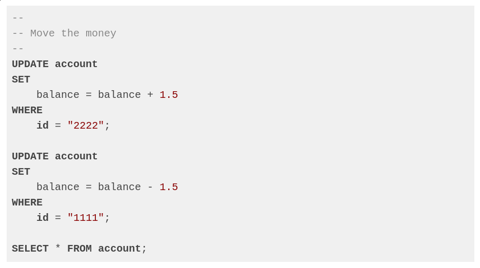
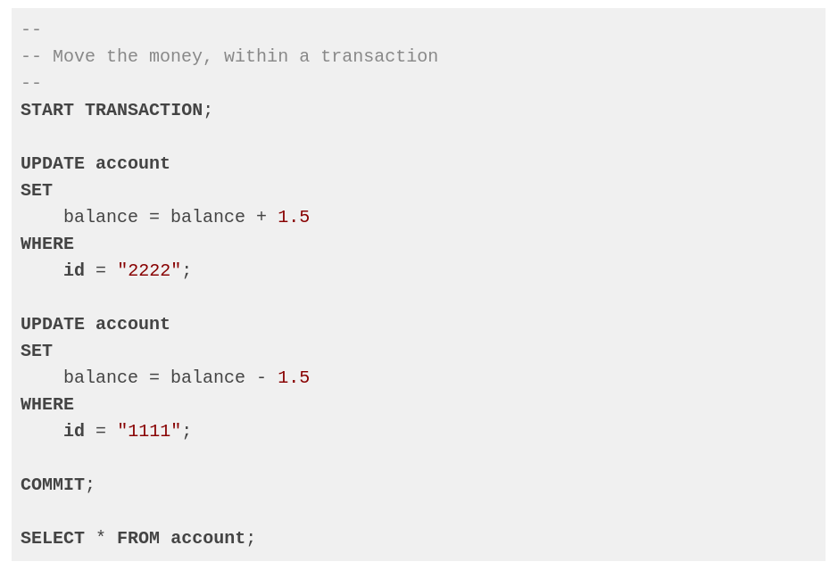
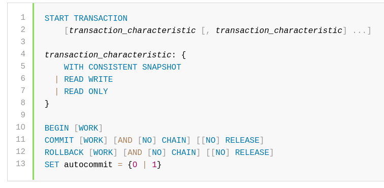
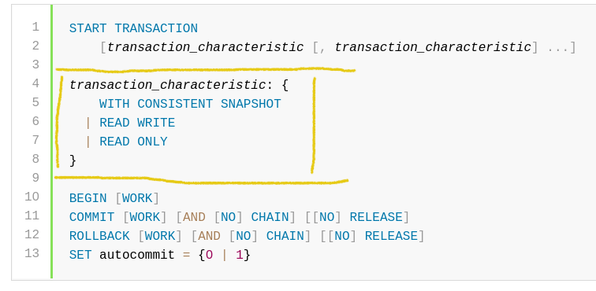
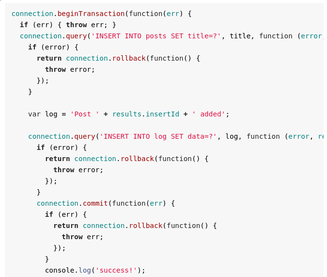

<!doctype html>
<html class="theme-5">
<meta charset="utf-8" />
<link href="../html-slideshow.bundle.min.css" rel="stylesheet" />
<link href="../style.css" rel="stylesheet" />
<script src="https://dbwebb.se/cdn/js/html-slideshow_v1.1.0.bundle.min.js"></script>

<title>Kursen databas</title>

<script data-role="slide" type="text/html" data-markdown class="titlepage center">
# Transactions
## All or nothing
### Mikael Roos
</script>


<script data-role="slide" data-markdown type="text/html">
# Agenda

* Storage engines
* Transaction
* ACID
* Locking
* Transactions in npm mysql

</script>


<script data-role="slide" data-markdown type="text/html">
# Storage engines

* InnoDB (default, ACID compliant)
* MyISAM (good for read-only/read-mostly)
* Memory (RAM only)
* CSV (text files comma separated values)
* Archive (unindexed seldom-references historical data)
* Blackhole (like /dev/null)

</script>


<script data-role="slide" data-markdown type="text/html">
# Transaction

* Do it all - or nothing

> "cross my heart and hope to die"

</script>


<script data-role="slide" data-markdown type="text/html" class="titlepage center">
# Example for transaction
## Move money between accounts

Adam sends 1,5 bitcoin to Eva.
</script>


<script data-role="slide" type="text/html" data-markdown class="center">
# Move money

<figure>

<figcaption>Move money with two UPDATE statements.</figcaption>
</figure>

</script>


<script data-role="slide" type="text/html" data-markdown class="center">
# Move money...

<figure>

<figcaption>Move money within a transaction.</figcaption>
</figure>

</script>


<script data-role="slide" data-markdown type="text/html">
# Transaction

```
START TRANSACTION;

-- DO SQL DEPENDENT ON EACH OTHER

-- DO ROLLBACK or COMMIT;

-- ROLLBACK;
COMMIT;
```

</script>


<script data-role="slide" type="text/html" data-markdown class="center">
# MySQL transaction

<figure>

<figcaption>Description of the "Transaction statement" from the manual.</figcaption>
</figure>

</script>


<script data-role="slide" data-markdown type="text/html">
# Transaction statement

* START TRANSACTION or BEGIN start a new transaction.

* COMMIT commits the current transaction, making its changes permanent.

* ROLLBACK rolls back the current transaction, canceling its changes.

* SET autocommit disables or enables the default autocommit mode for the current session.

</script>


<script data-role="slide" data-markdown type="text/html">
# Autocommit is default

By default, MySQL runs with autocommit mode enabled.

This means that, when not otherwise inside a transaction, each statement is atomic, as if it were surrounded by START TRANSACTION and COMMIT.

You cannot use ROLLBACK to undo the effect; however, if an error occurs during statement execution, the statement is rolled back.

</script>


<script data-role="slide" data-markdown type="text/html" class="titlepage center">
# Transactions are ACID

</script>


<script data-role="slide" data-markdown type="text/html">
# ACID

* Samling av properties för databastransaktioner
* Beskriver hur en transaktion måste bete sig
* Viktig komponent för att säkerställa integritet i en datas

</script>


<script data-role="slide" data-markdown type="text/html">
# A - Atomicity

* En transaktion utförs som en enhet, eller inte alls.
* Allt eller inget.
* Den är odelbar.

</script>


<script data-role="slide" data-markdown type="text/html">
# C - Consistency

* Transaktionen flyttar databasen från ett giltigt läge till ett annat
* Alla regler såsom constraints, cascades och triggers skall vara giltiga

</script>


<script data-role="slide" data-markdown type="text/html">
# I - Isolation

* Även om flera transaktioner exekveras samtidigt så skall resultatet från transaktionerna betraktas som om de exekverades sekventiellt.
* En transaktion kan inte se effekter av en delvis exekverad transaktion.


</script>


<script data-role="slide" data-markdown type="text/html">
# D - Durability

* När en transaktion är committad så skall den vara beständig, även om strömmen går och databasmotorn krashar.

</script>


<script data-role="slide" data-markdown type="text/html">
# ACID

* A - Atomicity
* C - Consistency
* I - Isolation
* D - Durability

</script>


<script data-role="slide" data-markdown type="text/html">
# Hantera ACID

* Tex vid återstart
    * Avbrutna transaktioner, som inte räknas som klara, ska tas bort (undo)
    * Transaktioner som räknas som klara måste också kontrolleras.
* Jämför transaktionslogg med innehållet i tabellerna (redo)

</script>


<script data-role="slide" data-markdown type="text/html">
# Transaktionslogg

* Skriv notering i loggfilen, utför sedan ändringen (write-ahead logging)
    * Typ transaktion
    * Vilket dataobjekt
    * Nuvarande värde
    * Nytt värde

* All data som behövs för undo/redo

</script>


<script data-role="slide" type="text/html" data-markdown class="center">
# Transaction access mode

<figure>

<figcaption>Characteristics can be set for the transaction. Permit or prohibit changes to tables used in the transaction.</figcaption>
</figure>

</script>


<script data-role="slide" data-markdown type="text/html">
# Isolation level

> "The isolation level is the setting that fine-tunes the balance between performance and reliability, consistency, and reproducibility of results when multiple transactions are making changes and performing queries at the same time."

<p class="footnote">This is a global setting on the server.</p>

</script>


<script data-role="slide" data-markdown type="text/html">
# Isolation level...

* REPEATABLE READ (default innodb)
* READ COMMITTED (expert usage)
* SERIALIZABLE (highest amount of consistency)
* READ UNCOMMITTED (least amount of consistency)

<p class="footnote">The levels on the edges (SERIALIZABLE and READ UNCOMMITTED) change the processing behavior to such an extent that they are rarely used.</p>

</script>


<script data-role="slide" data-markdown type="text/html">
# REPEATABLE READ

* Prevents any rows that are queried from being changed by other transactions
* Blocking non-repeatable reads but not phantom reads
* Moderately strict locking strategy
    * All queries within a transaction see data from the same snapshot
    * (data as it was at the time the transaction started)

</script>


<script data-role="slide" data-markdown type="text/html">
# READ COMMITTED

> Transactions cannot see uncommitted data from other transactions, but they can see data that is committed by another transaction after the current transaction started.

* Locking strategy that relaxes some of the protection between transactions
* To improve performance

</script>


<script data-role="slide" data-markdown type="text/html">
# Read phenomena

* Dirty reads (read data from a row that has been modified but not committed)
* Non-repeatable reads (reads the same row twice but gets different data each time)
* Phantom reads (new rows are added or removed by another transaction)

<p class="footnote">Phenomena which can occur when a transaction reads data that another transaction has modified.</p>

</script>


<script data-role="slide" data-markdown type="text/html">
# Deadlock

> "A deadlock is a situation where different transactions are unable to proceed because each holds a lock that the other needs.
> Because both transactions are waiting for a resource to become available, neither ever release the locks it holds."

<p class="footnote">Keep transactions that insert or update data small enough that they do not stay open for long periods of time.</p>

</script>


<script data-role="slide" data-markdown type="text/html">
# Locking between transactions?

* Transaction access mode
    * READ WRITE and READ ONLY
* Global isolation level
    * REPEATABLE READ, READ COMMITTED
* Storage engine used
* Avoid deadlock...

</script>


<script data-role="slide" data-markdown type="text/html" class="titlepage center">
# Tip on npm mysql package
## When moving money between Adam and Eva
</script>


<script data-role="slide" data-markdown type="text/html">
# Multiple queries

* Allow sending multiple queries within each `query()`

```
{
    "host":     "localhost",
    "user":     "user",
    "password": "pass",
    "database": "dbwebb",
    "multipleStatements": true
}
```

</script>


<script data-role="slide" data-markdown type="text/html" class="center">
# Transactions

<figure>

<figcaption>Convenience functions that execute the START TRANSACTION, COMMIT, and ROLLBACK commands respectively.</figcaption>
</figure>

</script>


<script data-role="slide" data-markdown type="text/html">
# Placeholder `??`

```
async function findAllInTable(table) {
    let sql = `SELECT * FROM ??;`;
    let res;

    res = await db.query(sql, [table]);
```

<p class="footnote">Compare this to the placeholder `?`.</p>

</script>


<script data-role="slide" data-markdown type="text/html">
# Hint

1. Move 1.5 from Adam to Eva
1. Move 1.5 from Eva to Adam

* Be DRY
* Write the JavaScript function so it has one set of SQL that can move money in any direction

</script>


<script data-role="slide" data-markdown type="text/html">
# References

* [MySQL
Transactional and Locking Statements](https://dev.mysql.com/doc/refman/8.0/en/commit.html)
* [MySQL InnoDB Locking and Transaction Model](https://dev.mysql.com/doc/refman/8.0/en/innodb-locking-transaction-model.html)
* [Boken Databasteknik, webbkursen om Transaktioner](http://www.databasteknik.se/webbkursen/transaktioner/index.html)
* [npm mysql](https://www.npmjs.com/package/mysql)

</script>


<script data-role="slide" data-markdown type="text/html" class="titlepage center">
# Slut
</script>


<script data-role="slide" data-markdown type="text/html">
<!-- empty slide by intention -->
</script>
